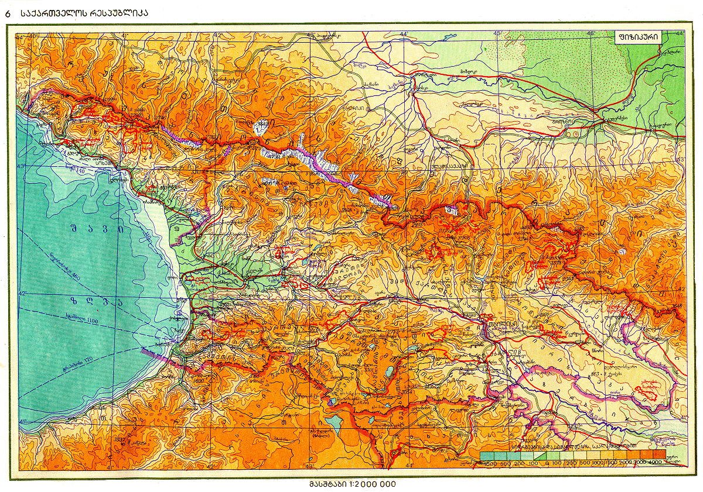
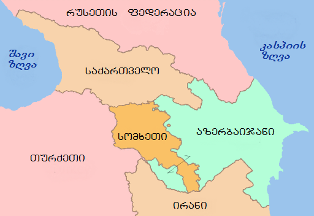

საქართველო
საქართველო ევროპისა და აზიის გასაყარზე, კერძოდ, კავკასიაში მდებარეობს.
დასავლეთიდან მას ესაზღვრება შავი ზღვა, ჩრდილოეთით — რუსეთის ფედერაცია,
სამხრეთ-აღმოსავლეთით — აზერბაიჯანი, სამხრეთით — სომხეთი და თურქეთი.
საქართველო იმ უძველეს სატრანსპორტო გზაჯვარედინზე მდებარეობს, რომელიც
აკავშირებდა და აკავშირებს ჩრდილოეთისა და სამხრეთის,დასავლეთისა და აღმოასვლეთის ქვეყნებს.
სწორედ მასზე გადიოდა ევროპა -აზიის დამაკავშირებელი სატრანსპორტო მაგისტრალი - ძველი აბრეშუმის გზა.
საქართველო შავი ზღვით უკავშირდება შავიზღვისპირეთის ქვეყნებს, ხოლო ბოსფორისა და
დარდანელის სრუტეებით - ხმელთაშუა ზღვის აუზის ქვეყნებს; გიბრალტარის სრუტით შესაძლებელია
კავშირი მთელს მსოფლიოსთან, მდინარე დუნაის მეშვეობით კი - აღმოსავლეთ და ცენტრალურ ევროპის ქვეყნებთან.

გეოტექტონიკური თვალსაზრისით,საქართველოს ალპურ-ჰიმალაური დანაოჭების
ვრცელ სარტყელში ცენტრალური მდებარეობა უკავია. იგი იწყება ატლანტის ოკეანის
სანაპიროებიდან და მოიცავს ხმელთაშუა და შავი ზღვების მიმდებარე მთიან ნაწილებს,
წინა აზიასა და ჰიმალაის მთიანეთს.ცნობილია, რომ სუბტროპიკულ და ზომიერ კლიმატურ
სარტყლებს შორის საზვარი მიუყვება კავკასიონის მთავარ წყალგამყოფ ქედს, რის გამოც საქართველო
მდებარეობს სუბტროპიკულ კლიმატური სარტყლის უკიდურეს ჩრდილო ნაწილში
საქართველოში ჩამოყალიბებულია სუბტროპიკული კლიმატური სარტყლის ჰავის თითქმის
ყველა ტიპი - ნოტიო სუბტროპიკული, ზომიერად ნოტიო, ზომიერად მშრალი და მშრალი-კონტინენტური.
ეს განპირობებულია მისი სუბტროპიკულ და ზომიერ კლიმატური სარტლების მიჯნაზე მდებარეობით,
ასევე ბუნებრივი ბარიერების - კავკასიონისა და სამხრეთ მთიანეთის არსებობითა და შავი ზღვის გავლენით.
ევროპა-აზიის შემაერთებელ კავკასიის ყელზე მდებარეობის გამო საქართველოში ერთმანეთს ემიჯნება განსხვავებული
ფლორისტული და ფაუნისტური არეალები. დასავლეთ საქართველოს ბარის ბუნებრივი პირობები მნიშვნელოვნად
განსხვავდება აღმოსავლეთ საქართველოს ბარისაგან, კავკასიონის მთიანეთის ბუნება კი - საქართველოს სამხრეთ მთიანეთის
ბუნებრივი პირობებისაგან.საქართველოს ბუნების შემადგენელი კომპონენტები (რელიეფი[8], ჰავა[9], წყლები და ა.შ.)
სხვადასხვა ადგილას სხვადასხვანაირად არიან დაკავშირებული და როგორც თვისობრივად, ისე სამეურნეო გამოყენების მიხედვით,
განსხვავებულ ბუნებრივ კომპლექსებს ქმნიან. საქართველოში ბარისა და მთის კლასის 11 ძირითადი ბუნებრივი ლანდშაფტი გამოიყოფა.
გეო პოლიტიკური მდებარეობა

ეკონომიკურ-გეოგრაფიული[10] თვალსაზრისით, საქართველო ევროპისა და აზიის შესაყარზე მდებარეობს და ოდითგან
დასავლეთისა და აღმოსავლეთის ცივილიზაციების დამაკავშირებელ ხიდს წარმოადგენდა, შავიზღვისპირა მდებარეობა კი
მას დიდ უპირატესობას ანიჭებს სამხრეთ კავკასიის სხვა სახელმწიფოებთან (აზერბაიჯანი და სომხეთი) შედარებით.
საქართველოს სატრანსპორტო-გეოგრაფიული მდებარეობა ამჟამად მეტად ხელსაყრელია. საბჭოთა კავშირში ყოფნისას იგი
სატრანსპორტო „ჩიხში“ იყო და მსოფლიოს ქვეყნებთან ურთიერთობა მხოლოდ მოსკოვის გავლით ხორციელდებოდა.
დამოუკიდებლობის მოპოვების შემდეგ ქვეყანამ პრაქტიკულად სატრანსპორტო გზაჯვარედინის ფუნქცია შეიძინა.
საქართველოს ხელსაყრელი სატრანსპორტო-გეოგრაფიული მდებარეობის მნიშვნელობა კიდევ ერთხელ მას შემდეგ დადასტურდა
და გაიზარდა, როცა საფუძველი ჩაეყარა ბაქო-სუფსისა და ბაქო-თბილისი-ჯეიჰანის ნავთობსადენების მშენებლობას. 1998 წელს
ბაქოში ხელი მოეწერა საერთაშორისო ხელშეკრულებას ევროპა–კავკასია–აზიის სატრანსპორტო დერეფნის შექმნის თაობაზე, რომელიც
დასავლეთ ევროპასა და აღმოსავლეთ აზიას დააკავშირებს კავკასიისა და შუა აზიის გავლით. ამ დერეფანს შემოკლებით „ტრასეკას“ უწოდებენ.
ასევე აღსანიშნავია, საქართველოს ხელსაყრელი რეკრეაციულ-გეოგრაფიული მდებარეობა, რადგანაც იგი მნიშვნელოვან ტურისტულ-რეკრეაციულ
არეალებს - კავკასიონსა დაშავიზღვისპირეთს შორისაა მოქცეული.